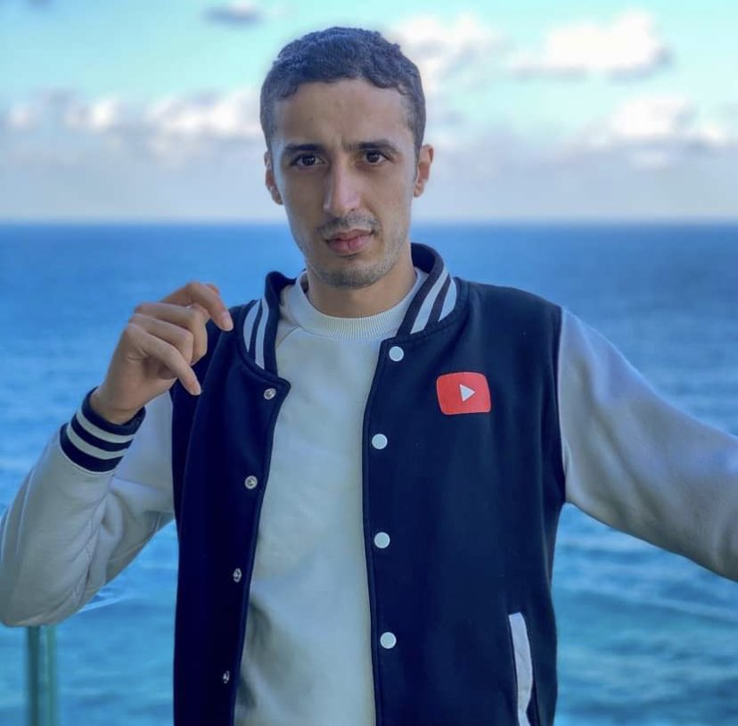
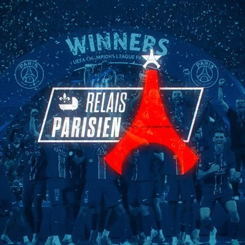
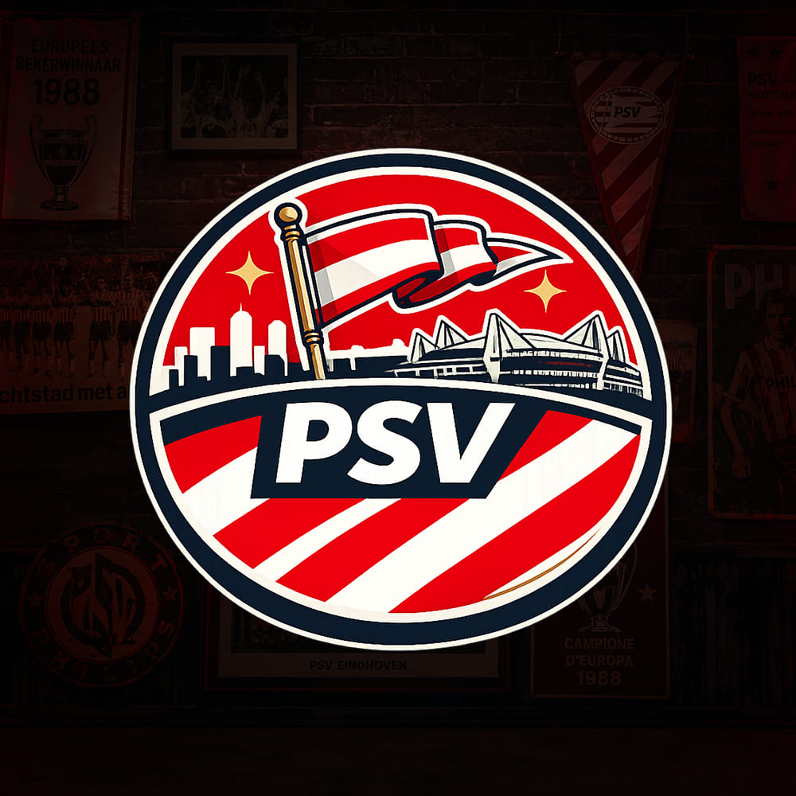

Profil
Projets développement
Compétences
Expériences
Curriculum Vitae

Contact
Portfolio graphisme
Projets graphiques
13 créationsAffichesMiniaturesPhotoshop
Un projet, une collaboration ou une simple question : choisis le canal qui te convient.



Mon histoire avec le graphisme commence en 2019, dans la cour de récréation. À cette époque, j’ai rencontré quelqu’un qui pratiquait une forme de création assez particulière : le graphisme mobile.
À l’époque, une véritable communauté française s’était créée autour du graphisme sur mobile. Curieux, je me suis rapidement intéressé à cet univers et cette personne m’a initié à la création graphique. Ça m’a immédiatement plu. Je réalisais mes premiers visuels directement depuis mon téléphone, principalement avec PixelLab et Adobe Photoshop Touch.
Très vite, je ne me suis plus contenté de créer pour moi. J’ai décidé de créer ma propre communauté de graphistes : Legacy Of Graphics. La grande majorité de ses membres étaient eux aussi des graphistes mobiles. On partageait nos créations, on s’entraidait, on échangeait des conseils et on progressait ensemble. C’était une petite communauté, mais une expérience qui m’a énormément marqué.
En parallèle, je réalisais de nombreux visuels pour des teams Fortnite, notamment des affiches et différents supports graphiques. À cette époque, la demande était importante et cela m’a permis de multiplier les projets et d’expérimenter différents styles.
Je partageais également mon travail sur YouTube, où je publiais des speed arts de mes affiches, miniatures et autres créations. C’était une manière de montrer mon évolution et de garder une trace de tout ce que je réalisais.
J’ai ainsi passé près de deux ans et demi à faire du graphisme mobile. Puis, un jour, mon téléphone s’est cassé. Je suis resté environ quatre à cinq mois sans téléphone.
Et pendant cette période, le monde dans lequel j’évoluais avait lui aussi énormément changé. Le graphisme mobile connaissait une véritable baisse d’activité. Les créateurs étaient de moins en moins actifs, les communautés se vidaient progressivement et même les teams Fortnite, qui représentaient une grosse partie de la demande à l’époque, commençaient elles aussi à perdre en activité.
À mon retour, j’avais donc perdu bien plus qu’un téléphone. J’avais perdu le contact avec une grande partie de la communauté, ma team et tout l’environnement dans lequel j’avais commencé à créer. Et surtout, l’univers du graphisme mobile que j’avais connu en 2019 n’était plus vraiment le même.
J’ai alors arrêté le graphisme mobile. Mais cette première expérience n’a pas disparu pour autant. Elle a été le véritable point de départ de mon parcours dans le graphisme. C’est durant ces années que j’ai découvert le plaisir de créer, d’expérimenter, de progresser et surtout de transformer une idée en visuel. Même si cette première aventure s’est terminée, elle a posé les premières bases de ce que je fais aujourd’hui.
En avril 2021, je décide de franchir une nouvelle étape et de me lancer dans le graphisme sur PC.
Le changement est immédiatement énorme. Je découvre de nouveaux logiciels, beaucoup plus d’outils et surtout une infinité de possibilités que je n’avais pas sur mobile. Je progresse rapidement, mais j’ai rapidement envie d’aller plus loin et de me confronter à d’autres créateurs.
Je commence alors à participer à différents défis de graphisme : deux graphistes s’affrontent sur un thème imposé et la meilleure création est désignée par les votes. Je participe également à plusieurs concours, notamment ceux organisés par Brisseu, un créateur reconnu dans le milieu du thumbnail design.
Pendant environ trois mois et demi, je multiplie les créations, j’expérimente différents styles et j’essaie surtout de comprendre ce qui fonctionne réellement dans une miniature. En parallèle, je commence à m’intéresser davantage au monde de YouTube et à l’idée de créer des miniatures pour des influenceurs.
Je partage régulièrement mes créations sur mes réseaux sociaux et je décide un jour de réaliser un concept de miniature pour Seinhor9, un youtubeur qui comptait alors plus d’un million d’abonnés.
Je ne m’attendais évidemment pas à ce qui allait suivre. Trois jours après avoir publié ma création, Seinhor9 me contacte directement pour me demander de réaliser une miniature pour lui.
C’est probablement l’un des premiers moments où je me suis réellement dit que mon travail pouvait intéresser des personnes bien au-delà de mon cercle habituel. Après cette expérience, j’ai peut-être eu le sentiment d’avoir accompli ce que je voulais accomplir à ce moment-là.
Et finalement, j’ai arrêté.
Je ne reprendrai réellement le graphisme qu’en 2025. Mais cette fois, ma pratique est beaucoup plus irrégulière.
Je peux parfois passer une semaine à réaliser trois ou quatre affiches, être très actif et avoir envie de progresser, puis complètement arrêter pendant plusieurs mois. C’est donc assez difficile de résumer cette période autrement que comme une alternance entre des phases de création et de longues pauses. Cette dynamique se poursuit jusqu’au début de l’année 2026.
Mais heureusement, le graphisme, c’est un peu comme le vélo : ça ne s’oublie pas. Malgré ces longues périodes sans pratiquer, je n’ai jamais réellement perdu le niveau que j’avais acquis au fil des années. À chaque retour, les automatismes finissaient par revenir, et je pouvais rapidement me remettre à créer.
Depuis septembre 2026, j’ai cependant décidé de reprendre le graphisme de manière beaucoup plus sérieuse et régulière, avec une orientation presque exclusivement tournée vers le sport.
C’est un domaine qui me plaît particulièrement et dans lequel j’ai envie d’explorer de nouvelles choses. J’aime notamment tout ce qui touche à l’univers du football, aux affiches de match, aux annonces, aux concepts et à la création d’identités visuelles autour d’un événement ou d’un joueur.
Aujourd’hui, je continue d’apprendre entièrement en autodidacte. Je regarde, j’expérimente, je teste de nouvelles techniques et j’essaie chaque jour de repousser un peu plus mes limites.
Je considère finalement que mon parcours dans le graphisme n’est pas une ligne droite. Il est fait de débuts sur mobile, de découvertes sur PC, de longues pauses et de nouveaux départs. Mais chaque période, même celles où je ne créais plus, m’a apporté quelque chose. Et aujourd’hui, toutes ces expériences constituent les bases de la manière dont je crée.
Développeur de 21 ans basé en France, diplômé d’un BTS SIO option SLAM. Mon parcours couvre le développement web et applicatif, les bases de données et la gestion de projet, avec une pratique régulière du graphisme.
Je développe surtout en HTML, CSS, JavaScript et PHP, et j’explore Flutter, C#, Node.js, PostgreSQL et Docker. J’aime concevoir des applications complètes, du front-end à l’API, en passant par la base de données et l’architecture.
Le graphisme me permet de soigner l’identité visuelle de mes projets : je vise un résultat cohérent sur le fond comme sur la forme. Le football, les mangas et les jeux vidéo nourrissent mes projets personnels.
B1.1Gérer le patrimoine informatiqueB1.2Répondre aux incidents & demandesB1.3Développer la présence en ligneB1.4Travailler en mode projetB1.5Mettre à disposition un service informatiqueB1.6Organiser son développement professionnelB2.1Concevoir & développer une solution applicativeB2.2Assurer la maintenance corrective ou évolutiveB2.3Gérer les données (BDD, SQL, modélisation)B3.1Protéger les données à caractère personnelB3.2Préserver l'identité numériqueB3.3Sécuriser les équipements & usagesB3.4Garantir disponibilité, intégrité & confidentialitéB3.5Cybersécurité d'une solution applicativeAnimal'And est une association d'aide animalière implantée dans le Nord de la France, dédiée à la protection et au bien-être des animaux. Durant ce stage, j'ai conçu et développé deux applications internes : une application de messagerie interne permettant aux membres de l'association de communiquer entre eux en temps réel, et une application boutique interne permettant aux membres d'acheter des produits et articles proposés par l'association. Ces deux projets m'ont permis de travailler sur la gestion d'authentification, les bases de données et le développement full-stack.
Cadre Perso est une entreprise spécialisée dans la création de cadres de football personnalisés aux couleurs du club de son choix. Ma mission principale était la gestion des réseaux sociaux (community management) : création de contenu, planification de publications, animation de la communauté et suivi des statistiques. J'ai également participé à la gestion et à l'amélioration du site web, en proposant des optimisations UX/UI et en effectuant des mises à jour régulières pour améliorer l'expérience utilisateur et la visibilité en ligne.
Paris Team est un média principalement présent sur Twitter (aujourd'hui X), comptant plus de 100 000 abonnés, dédié à l'actualité du Paris Saint-Germain. Ma mission consistait à créer des affiches et visuels graphiques sur le thème du PSG : compositions de matchs, annonces de transferts, mises en avant de joueurs. Cette expérience m'a permis d'affiner mes compétences en design graphique dans un environnement médiatique dynamique avec des contraintes de temps fortes.
Développeur Web & Applicatif · Graphiste
21 ans · France| Période | Structure | Rôle | Type |
|---|---|---|---|
| 2024 – 2026 | Lycée Henri WallonValenciennes | BTS SIO, option SLAM | Diplôme obtenu |
| Jan – Fév 2026 | Animal'AndAssociation d'aide animalière | Développeur d'applications | Stage |
| Mai – Juin 2025 | Cadre PersoCadres football personnalisés | Community manager & gestion web | Stage |
| Été 2024 | Paris TeamMédia PSG · +100K abonnés | Graphiste football | Graphisme |
| 2021 – 2024 | Lycée du HainautValenciennes | Bac STI2D, option SIN | Diplôme obtenu |
Le fichier Assets/CV.png est introuvable. Vérifie son nom et son dossier.